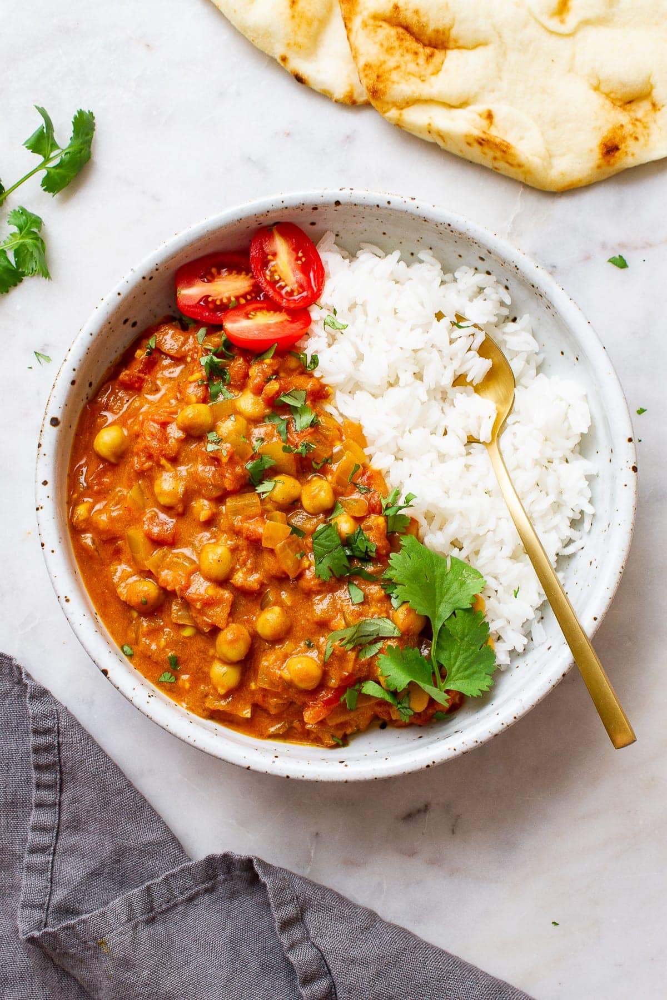

Chickpea Tikka Masala

More Descriptive Tile
Desribe recipe
Ingredients
- 1 red onion
- 2 garlic cloves
- 1 can of tomatoes (or 4 fresh tomatoes)
- 1 Tbsp paprika
- 1 Tbsp garam masala
- 2 tsp turmeric
- 2 tsp cumin
- 1/2 tsp sugar (optional)
- 1 tsp salt
- 2 Tbsp tomato paste
- 2 cans of chickpeas, drained
- 1 cup coconut cream
- 1/2 lime
Steps
- Dice onions and garlic. (Cut tomatoes if using fresh)
- Heatoli in a pan over medium high heat, add the onion and garilc.
Fry for 2 minutes.
- Add spices and tomatoe paste. Fry until fragrant and tomatoe paste
is carmelised.